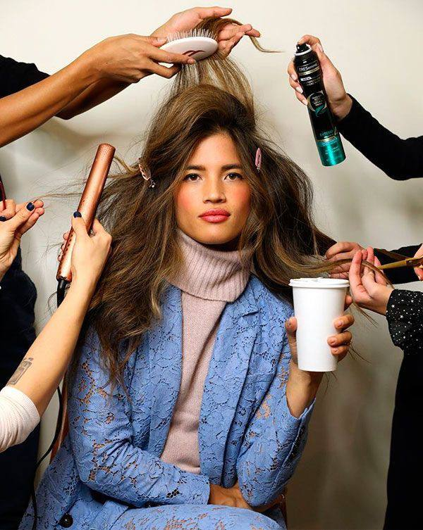

-
1. Буст Ап (Boost up) - піднімає вгору. Створення об'єму у
кореня щадним способом. Авторська техніка Олени Глінки –
технологія волосся заснована на біозавивці. Відмінність від
хімзавивки тим, що біозавивку можна змінити та прибрати
спеціальним складом. Не рекомендується переношувати Буст Ап
після 6 місяців. Краще прийти зняти та повернути волосся у
початковий вигляд. Чекати поки що Буст Ап відросте щоб його
обрізати НЕ ТРЕБА!
-
2. Буфант (Bouffant) – техніка використовує ті ж склади та інша
техніка роботи. Спочатку робиться начіс у прикореневій зоні,
пасма накручуються на бігуді, вирівнюють. Результат до 3-х
місяців.
-
3. Флісинг (Fleeccing) – Спрощений варіант із природним обсягом.
Начіс, біоостава без бігудів і шпильок, прасування з міні гафре.
Ефект 1-2 місяці. Температура гафре 210 градусів.
-
4. Еко воліум (Eco volume) – прикореневий об'єм за допомогою
затискачів, робимо об'єм та ВАУ ефект, як у Буст Ап. Ефект 3-4
місяці.
-
5. Воліум Он (Volume on) – накрутка пасма на бігуді та обробка
складів з використанням кліпсів. Ефект близько 2-х місяців.
-
6. Вау Буст (Wow Boost) – травмонебезпечна техніка прикореневого
об'єму. На прикореневу зону наносять сильний кератин, гафре
прасок на 8-10 с на одному місці затримуємо 210 градусів.
Шкодить, робить заломи.
Примітка: Перший раз робимо середній об'єм 3 завитки, для довгого
волосся можна 4-5 завитків.